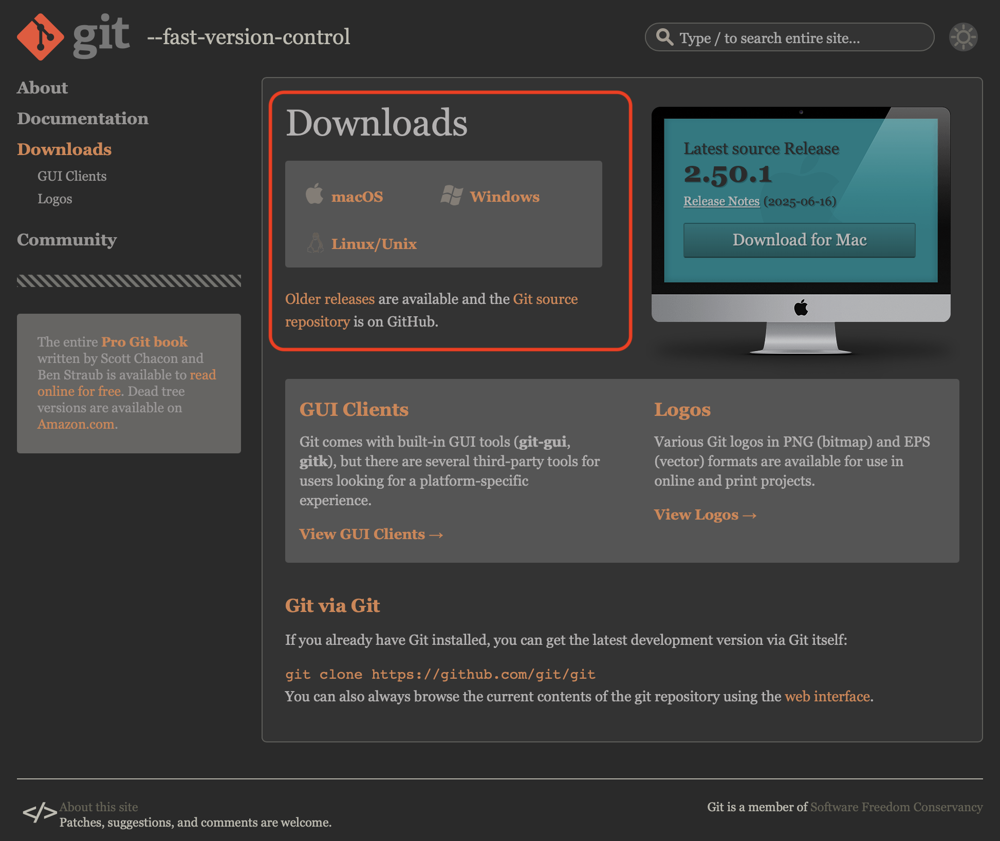
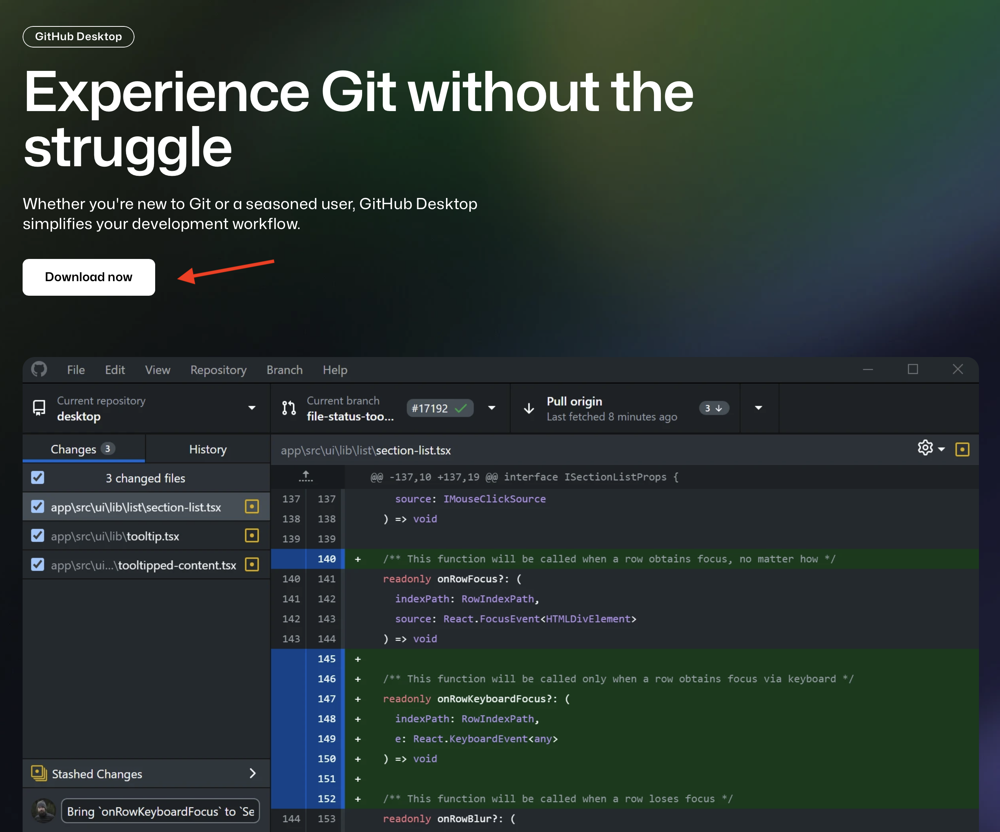
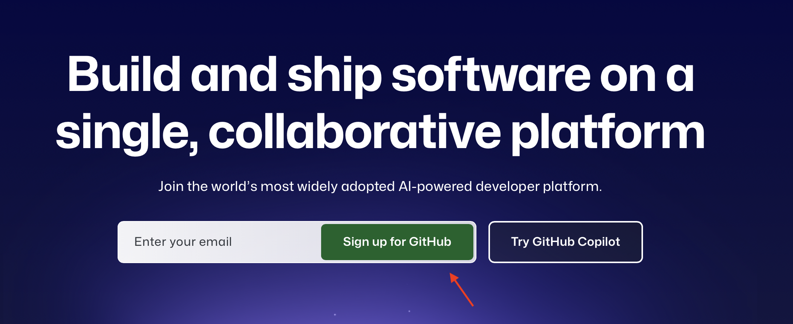
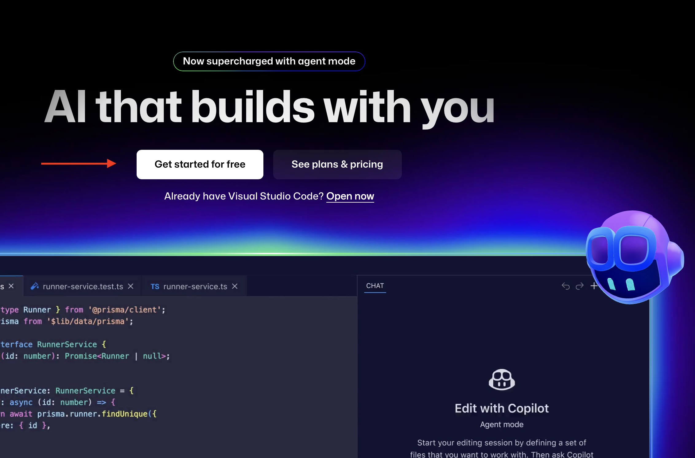
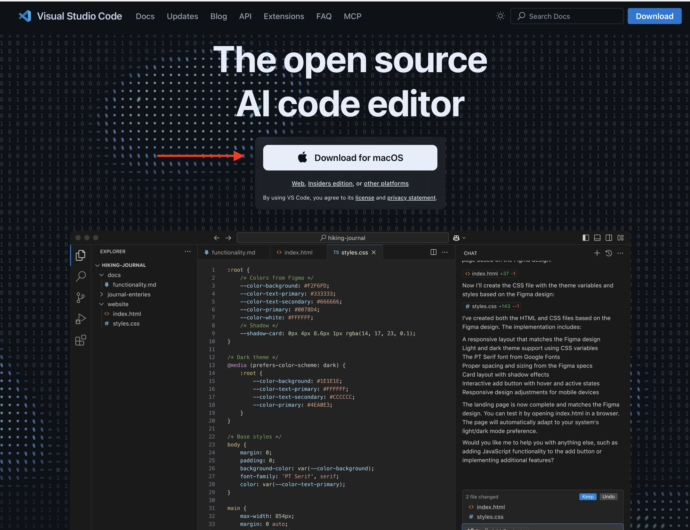
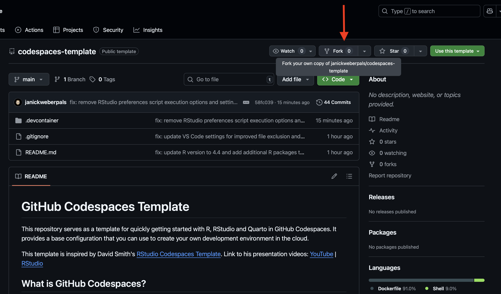
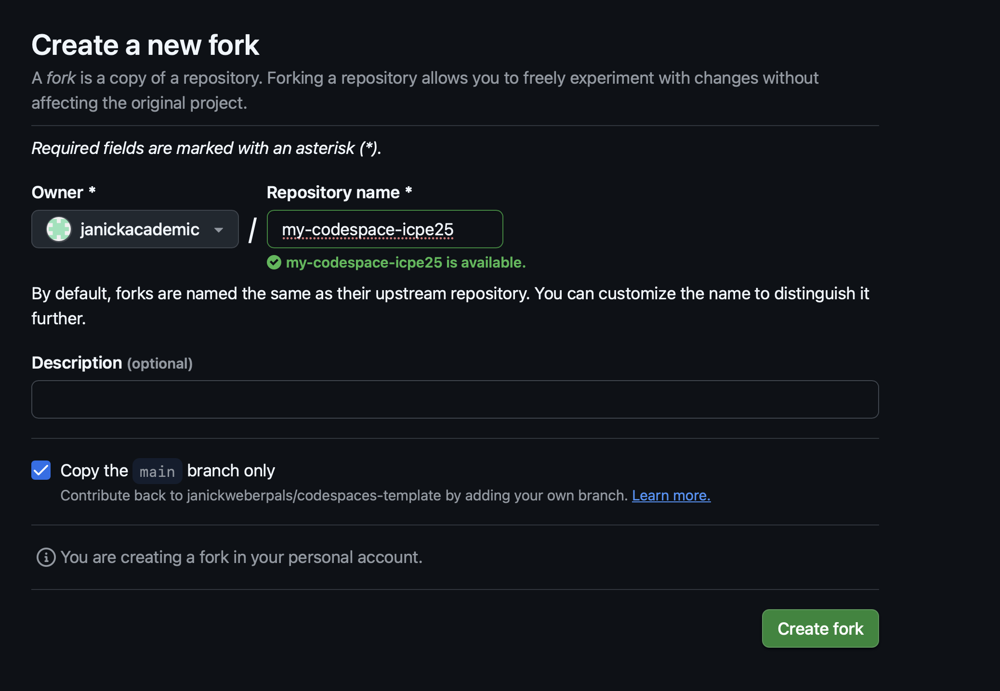
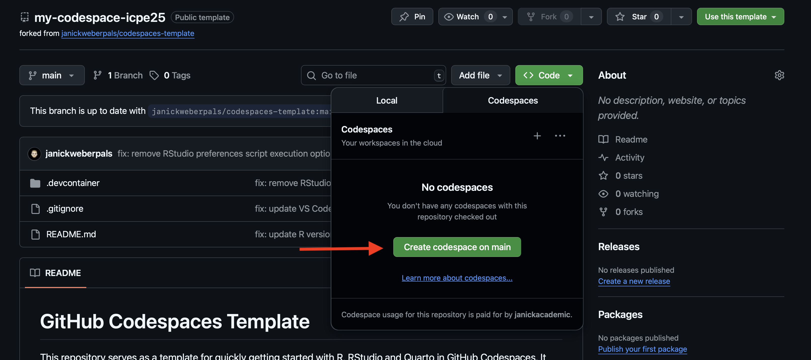

flowchart TB A(Design stage) --> B B(Analysis execution stage) --> C C(Reporting stage)
2 Syllabus
This site provides some further information on the objectives and syllabus/organization of the course.
Course Date: August 25, 2024 (9am-12:30pm, Berlin)
2.1 Course Objectives
Attendees of this advanced methods couse will learn how to implement transparent and reproducible workflows across the real-world evidence study lifecycle.
Design stage: Incorporate reproducible reporting of key study parameters at a study design and planning stage using the HARPER protocol
Analysis stage: Version control and share analytic code at the analysis and execution stage of the study using git and Github
Reporting stage: Use literate programming by combining narrative language, analytic code and study results for transparent and reproducible study reporting
2.2 Syllabus
In this practical hands-on course, we introduce resources and tools needed for the transparent and reproducible conduct of RWE studies following FAIR (Findable, Accessible, Interoperable and Reproducible) principles.
| Time | Topic | Instructor | Description |
|---|---|---|---|
| 14:30 - 14:40 | Welcome and introduction | Janick Weberpals | Welcome, housekeeping, and introduction to the topic |
| 14:40 - 15:00 | DESIGN STAGE: HARPER template | Shirley V. Wang | A harmonized protocol template to enhance reproducibility of hypothesis evaluating real-world evidence studies on treatment effects (HARPER protocol) |
| 15:00 - 16:10 | ANALYSIS STAGE: Git and GitHub | Anna Schultze, John Tazare | Introduction to the Git distributed version control system and remote repositories (e.g., GitHub) to track changes, collaborate, disseminate and archive analytic source code through dedicated project repositories that maintain a complete audit trail of all relevant study documents including code lists. This will be followed by interactive case study for part in which every course participant can try git hands-on. |
| 16:10 - 16:40 | COFFEE BREAK | - | Take a break and enjoy a tasty coffee |
| 16:40 - 17:20 | ANALYSIS STAGE: Github Copilot | Janick Weberpals | Introduction to AI-based tools to support and augment code development, quality control, transparency and reproducibility |
| 17:20 - 17:50 | REPORTING STAGE: Quarto introduction | Janick Weberpals | Introduction and examples of literate programming using the Quarto technical reporting system |
| 17:50 - 18:00 | COURSE CONCLUSION & EVALUATION | Janick Weberpals | Future direction and trends & resources for where to go to learn more. Completing course evaluation. |
2.3 Technical Setup
This section provides some step-by-step instructions on how to install relevant software discussed and presented throughout the course.
2.3.1 Download and install git
Git is a free and open source distributed version control system designed to handle everything from small to very large projects with speed and efficiency. It comes as a command line software, i.e., natively there is no graphical user interface (GUI) as you may be used to from other commonly used software. However, GUI applications (which make the handling of git commands easier, especially for beginners) are available and described in Section 2.3.2.
Step 1: Go to https://git-scm.com/downloads
Step 2: Download the
gitdistribution for your specific operating system (Windows, MacOS, Linux) (see Figure 2.2)

2.3.2 GitHub Desktop
GitHub Desktop is a free, open-source application that provides a graphical user interface (GUI) for interacting with Git and GitHub, simplifying tasks like committing, pushing, and pulling changes, as well as managing repositories. It aims to make using Git and collaborating on GitHub more accessible, especially for those who prefer not to use the command line.
Step 1: Go to https://github.com/apps/desktop
Step 2: Click on Download now (see Figure 2.3)
Step 3: You will be prompted to the correct distribution for your specific operating system (Windows, MacOS, Linux)

2.3.3 GitHub Account Setup
GitHub is a web-based platform that uses Git for version control and collaboration on software development projects. It allows developers to store, manage, and share code, making it easier to work together on projects and track changes. Think of it as a social coding platform and a cloud-based storage for code.
You can sign-up for a free account (which is more than sufficient enough for the purposes of this course), which gives you access to GitHub’s core features including:
Access to GitHub Copilot
Unlimited repositories (to collaborate on public and private projects)
Integrated code reviews
Automated workflows (via CI/CD integrations and GitHub Actions with 2,000CI/CD minutes per month)
Community support
Often larger organizations such as universities and companies also have (paid) enterprise accounts which give you access to even more features. To sign up for a GitHub account, follow these steps:
Step 1: Go to https://github.com
Step 2: Enter the E-mail address that should be associated with your GitHub account and press Sign up for GitHub (see Figure 2.4)
Step 3: Enter more details like your password to access GitHub, a username and your country and click Create account

2.3.4 GitHub Copilot
GitHub Copilot is a generative AI tool that functions as a coding assistant to help you write code faster and so much more.
Step 1: Go to https://github.com/features/copilot
Step 2: Click on Get started for free. Be aware that there also also paid plans (e.g., Copilot Pro) and ensure that you sign up for the free plan, which is enough to get started and explore this tool.
Step 3: You can use GitHub Copilot directly via a chatbot on Github.com (e.g., to learn more about code in repositories or to ask questions on existing software tools that are hosted on GitHub) or in supported IDE (Visual Studio Code, Visual Studio, RStudio, JetBrains IDEs, Azure Data Studio, Xcode, Vim/Neovim, and Eclipse)

2.3.5 Visual Studio (VS) Code
Visual Studio Code (VS Code) is a free, open-source, and highly customizable code editor developed by Microsoft. It’s known for its lightweight nature, powerful features, and extensive extensibility through extensions. VS Code is used by developers for various tasks, including editing, debugging, and managing code. One of the key strengths of VS Code is its extensibility. The VS Code Marketplace offers a vast collection of extensions that add functionality for various programming languages, frameworks, and tools.
Step 1: Go to https://code.visualstudio.com
Step 2: The download button for your specific operating system (Windows, MacOS, Linux; see Figure 2.5)
Step 3: Follow the installation prompts that you will be guided through

2.3.6 Fork the GitHub Codespaces Template
GitHub Codespaces provides cloud-powered development environments for any activity - whether it’s a long-term project, or a short-term task like reviewing a pull request. You can work with these environments from Visual Studio Code or in a browser-based editor. GitHub Codespaces comes with a free plan for personal accounts but can also be extended to a paid plan that comes with more storage and compute hours.
One of the core strengths is that it’s cloud-based and dependencies can be dockerized, i.e., it allows researchers to create and access complete and customized development environments remotely, directly from a web browser. For example, you may be using a specific combination of a local operating system (Windows, MacOS or Linux), a specific version of a programming language (e.g., R version 4.4.1) and a suite of R packages in their respective versions. With GitHub Codespaces you can create such a highly customized environments and reproduce (even share) these at the click of a button.
We created such an environment for this course and you can access it by following these steps:
- Sign up for a (free) GitHub account (see Section 2.3.3) and GitHub Copilot (Section 2.3.4)
- Go to https://github.com/janickweberpals/codespaces-template
- Click on Fork (Figure 2.6) to create a forked version on your GitHub account

- Optional: Rename your forked version (e.g., my-codespace-ICPE25, see Figure 2.7)

- Go to
Code > Codespaces > Create codespace on main(Figure 2.8)
